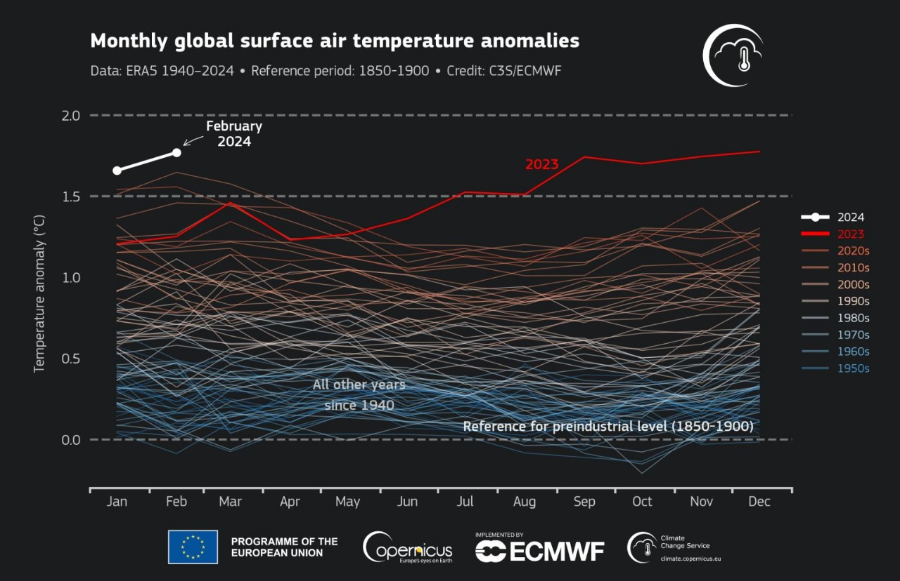

We believe that it's way past time to remove all the waste carbon we've been putting into our atmosphere:

We are trained biologists developing new catalysts for efficient CO2 capture.
We were intimidated at first, but then we built a DAC prototype over the weekend.
Obviously, there are many ways to improve this prototype.
We are hoping to work with others to develop scalable carbon capture and ultimately affect the temperature of the world.
If you'd like to join forces in building or supporting this, enter your information here.
For inquiries, drop us a line:
2024/04